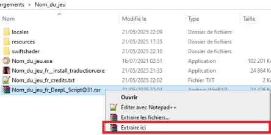
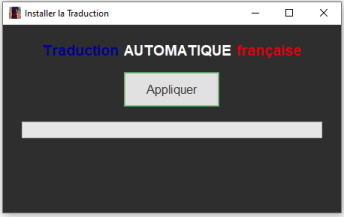
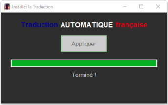

Certains jeux utilisent un fichier .asar pour regrouper tous leurs fichiers (scripts, images, sons, etc.) en un seul.
C’est plus pratique pour la distribution et le chargement. Pour traduire, il faut extraire ce fichier, modifier les textes, puis le recompiler ou utiliser un dossier alternatif.
Dans l’archive de traduction du jeu, je vous propose deux méthodes pour appliquer la traduction :
🎯 Méthode Automatique (Plug and Play)
Cette méthode utilise un exécutable qui applique la traduction sans rien installer de supplémentaire. Tout est inclus !
- Mettre et décompresser l’archive de traduction dans le répertoire principal du jeu (là où se trouve l’exécutable du jeu).
- Double-cliquez sur xxx_fr__install_traduction.exe.
- Une fenêtre s’ouvrira.

Cliquez sur "Appliquer" pour lancer le processus.
- Extraction : L'outil extrait le fichier
app.asardans un dossier temporaire. - Mise à jour : Il remplace les fichiers texte par les versions traduites fournies dans l'archive.
- Repackaging : L'outil repacke les fichiers modifiés dans un nouveau
app.asar.
⚠️ Remarque : si le fichier .asar du jeu est volumineux, l’opération peut prendre un peu de temps.
Une fois le message "Traduction appliquée !" affiché, cliquez sur OK. Vous pouvez ensuite supprimer l'exécutable et l'archive.

Lancez le jeu normalement et profitez de la traduction !
🔧 Méthode Manuelle (Avancé)
Si vous préférez gérer vous-même la traduction, j’ai inclus les fichiers traduits dans l’arborescence correcte pour une intégration manuelle.
⚠️ Mais attention, il vous faudra manipuler le fichier .asar pour que tout fonctionne correctement.
Cela nécessite des outils spécifiques, l'installation de dépendances et quelques connaissances techniques.
✅ Liste de jeux traduits utilisant un fichier .asar
- Holiday - Traduction
- Keiko-san (47) my co-worker, is a single mother - Traduction
- Isekai Slave - Traduction
- Netorare Wife -Yukiko- 20 Years After Marriage - Traduction
- Alpha Male, Play With My Milf Housemaid - Traduction
- Fumiko and the Village of Lust - Traduction
- MILF Diary, I am Trying to Impregnate My Mom - Traduction
- Goblin City Nights 1 (Remastered) - Traduction
- Goblin City Nights 2 - Traduction